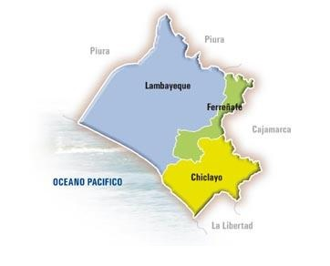

Cuenta la leyenda que en una época remota arribó a las playas de la actual caleta San José una gran flota de balsas extrañas, tripuladas por un brillante cortejo de guerreros extranjeros, que tenían por jefe a un hombre de gran talento y valor llamado Naylamp, quien fundó esta civilización. Sus descendientes son los forjadores de la gran cultura Chimú, anterior al Imperio de los Incas, que se desarrolló hasta lograr un notable estado paralelo al Incanato, pero a diferencia de éste, trasladó su capital a zonas más propicias y estratégicas, estableciendo grandes centros urbanos. Fueron grandes agricultores y tejedores, pero sobre todo maravillosos orfebres, con extraordinarios trabajos en oro. La conquista del territorio Chimú a m anos de los Incas duró casi cuatro décadas, en las que intervinieron Pachacútec, Inca Yupanqui y Huayna Cápac sucesivamente. Cuando Francisco Pizarro pasó por el lugar, rumbo a Cajamarca a ultimar la conquista del imperio, quedó admirado al contemplar el oro expuesto en formas de vasijas y utensilios. Durante la Colonia se despertó la rivalidad entre los pueblos de Lambayeque y Santiago de Miraflores de Zaña, por la opulencia de este último, despertando inclusive la codicia de los piratas. Un desborde en 1720 inundó Zaña y terminó con una floreciente ciudad. En la Emancipación y la Independencia, el pueblo lambayecano tuvo como su caudillo al patriota Juan Manuel Iturregui, quien propagó las ideas libertarias y ayudó a ingresar armas para dicha causa. Dos valerosos hijos como Elías Aguirre y Diego Ferré ofrendaron su vida a bordo del Monitor Huáscar en el Combate de Angamos
El departamento de Lambayeque está ubicado en la parte septentrional y occidental del territorio peruano.
Sus coordenadas geográficas se sitúan entre los paralelos 5° 28 y 7° 10 27 de latitud sur y los meridianos
79° 53 48 y 80° 37 24 de longitud oeste; la altitud va de 4 m.s.n.m en el distrito de Pimentel a
4,000 m.s.n.m. en el distrito de Inkawasi.
Limita por el norte con el departamento de Piura, por el este con el departamento de Cajamarca, por el sur con el departamento de La Libertad y por el oeste con el Océano Pacífico
El departamento de Lambayeque tiene una extensión superficial de 14,231.30 km 2, es decir el 1.1% de 1 285,6 km 2 correspondientes a la superficie total del país, desagregado por provincias de la siguiente manera: Chiclayo 3,288.07 km2, Ferreñafe 1,778.60 km2 y Lambayeque 9,346.63 km2.

Se caracteriza por la alegría de sus bailes: marinera y tondero; también se practica la medicina folklórica o curanderismo utilizando hierbas y otros productos, así como ritos mágicos. Una estampa tradicional es la presentación de los caballos de paso montados por expertos chalanes
sus platos típicos son: